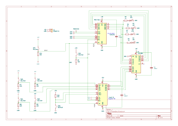
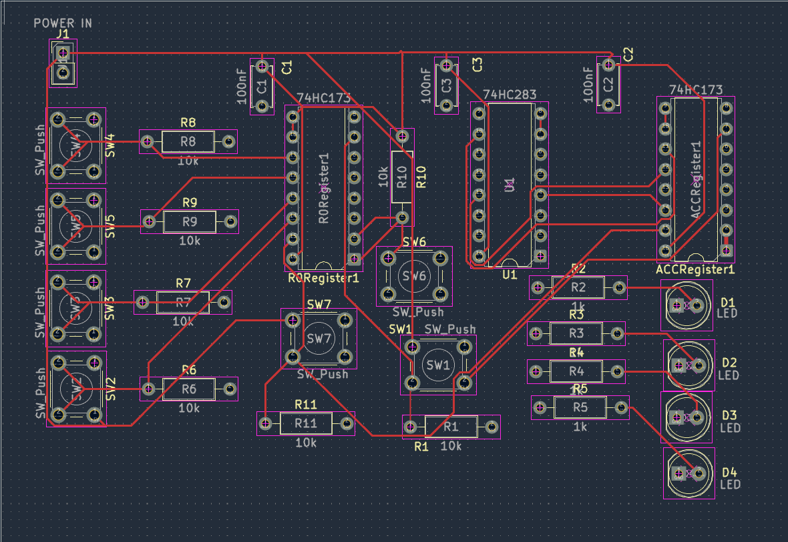
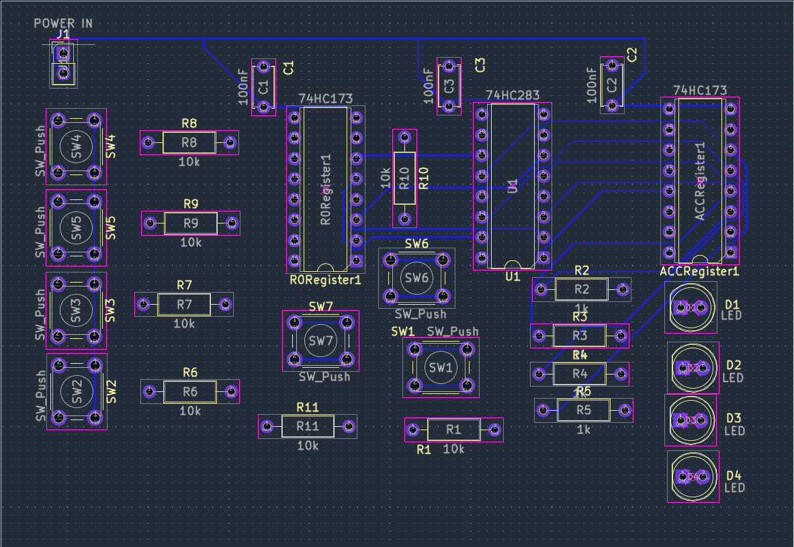

4-Bit Adder / Accumulator PCB
Double layer digital logic PCB designed in KiCad using 74 series registers, a binary adder, manual controls, and accumulator feedback.
Project Goal
The goal of this project was mastery of the 74 series IC, mastery of Kicad, and an understanding of the logic behind a 4-bit adder/accumulator
I designed a 4-bit adder/accumulator circuit that demonstrates how registers, binary addition, clock signals, reset controls, manual inputs, and feedback can work together as a basic computer datapath.
System Architecture
The design uses two 4-bit registers and a 4-bit binary adder. The R0 register stores a manually entered value, while the accumulator register stores the running result.
The outputs of R0 and the accumulator are connected to the two inputs of the binary adder. The resulting sum is routed back into the accumulator so that each clock pulse can update the stored result.
Accumulator Output → Feedback into Adder
Schematic Design
Before beginning the physical PCB layout, I created the full circuit schematic in KiCad. This allowed me to define all electrical connections and verify how the registers, adder, switches, resistors, LEDs, clock, reset, and power circuitry interact.

Complete KiCad schematic for the 4-bit adder/accumulator system. Click the schematic to inspect the full-resolution drawing.
Open Full-Resolution Schematic ↗PCB Layout and Routing
After completing the schematic, I transferred the design into KiCad's PCB Editor. I arranged the components to create a logical signal flow from the manual inputs, through the R0 register and adder, into the accumulator and output LEDs.
The board uses two copper layers. Signal traces are distributed between F.Cu and B.Cu, while the bottom copper layer also contains a ground plane.
During routing I used KiCad's Design Rules Checker to locate incomplete connections, shorts, clearance problems, and other layout errors until the design reached zero unconnected items and zero DRC errors.
Front Copper — F.Cu

Front copper routing used for logic signals, control connections, and power distribution.
Open Front Layer ↗Back Copper — B.Cu

Back copper routing containing additional signal connections and the PCB ground plane.
Open Back Layer ↗PCB Design
The board uses through-hole components so that the 74series IC, switches, resistors, capacitors, and LEDs are functional.
Documentation / Notes
I documented the design process, component behavior, troubleshooting steps, and lessons learned while developing the circuit.
View My Project NotesCurrent Status
The schematic, PCB layout, two-layer routing, electrical verification, 3D inspection, Gerber generation, and drill-file generation have been completed.
The next stage of the project is PCB fabrication, component assembly, soldering, and physical hardware testing.